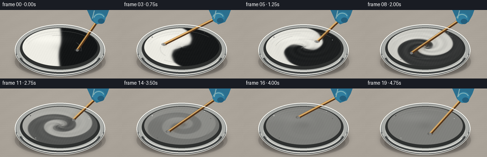
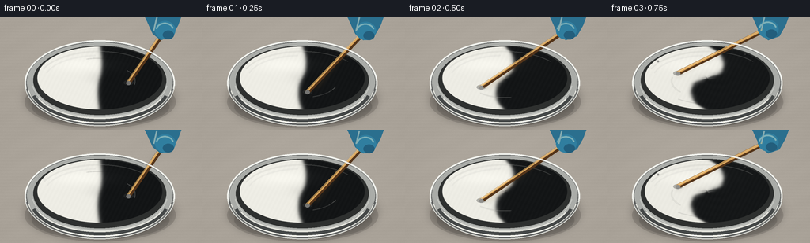

CODING AGENTS AS PIXEL WORLD MODELS
traex/GPT-5.6-Sol · material_0002
点击播放 · 原生 RGB 像素
逐轮保存的候选
回放视频、检查图与代码变化。
每份候选均可单独播放。实际图片检查记录在下方工具轨迹中。
候选 01播放与检查图
点击播放 · 原生 RGB 像素


展开代码变化
--- 上一保存版本
+++ 本次保存版本
@@ -0,0 +1,172 @@
+from pathlib import Path
+import math
+import numpy as np
+from PIL import Image, ImageDraw, ImageFilter
+import artifact_io
+
+# Procedural, deterministic paint-mixing animation. Render large then downsample.
+W, H, N = 256, 144, 20
+S = 3
+w, h = W*S, H*S
+rng = np.random.default_rng(2718)
+
+# Fixed fine grain keeps the tabletop and paint photographic rather than perfectly flat.
+yy, xx = np.mgrid[0:h, 0:w]
+fixed_noise = rng.normal(0, 1, (h, w))
+
+def smoothstep(x):
+ x = np.clip(x, 0.0, 1.0)
+ return x*x*(3-2*x)
+
+def ellipse_mask(cx, cy, rx, ry, feather=1.5):
+ d = np.sqrt(((xx-cx)/rx)**2 + ((yy-cy)/ry)**2)
+ return np.clip((1.0-d)*min(rx,ry)/feather + 0.5, 0, 1)
+
+def composite(base, layer, alpha):
+ a = alpha[...,None]
+ return base*(1-a) + layer*a
+
+def arc_points(cx,cy,rx,ry,a0,a1,n=60):
+ aa=np.linspace(a0,a1,n)
+ return [(int(cx+rx*np.cos(a)),int(cy+ry*np.sin(a))) for a in aa]
+
+def render(k):
+ u = k/(N-1)
+ # mixing proceeds quickly, then gives the viewer a clear, fully blended ending
+ mix = smoothstep(min(1.0, u/0.88))
+
+ # warm neutral work surface, subtle top light and vignette
+ X, Y = xx/S, yy/S
+ radial = np.sqrt(((X-130)/180)**2 + ((Y-64)/135)**2)
+ light = 9*(1-np.clip(radial,0,1))
+ base = np.zeros((h,w,3), dtype=float)
+ table = np.array([167,160,150],float)
+ base[:] = table
+ base += light[...,None]
+ base += (fixed_noise*1.35)[...,None]
+ # faint brushed counter texture
+ base += (1.1*np.sin(Y*1.55) + .7*np.sin(X*.11+Y*.23))[...,None]
+
+ im = Image.fromarray(np.uint8(np.clip(base,0,255)), 'RGB')
+ d = ImageDraw.Draw(im, 'RGBA')
+ sc=S
+ Cx,Cy=126*sc,82*sc
+
+ # broad bowl/contact shadows
+ d.ellipse((31*sc,75*sc,222*sc,142*sc), fill=(39,34,31,42))
+ d.ellipse((40*sc,90*sc,214*sc,139*sc), fill=(30,27,25,38))
+ shadow=Image.new('RGBA',(w,h),(0,0,0,0)); sd=ImageDraw.Draw(shadow,'RGBA')
+ sd.ellipse((32*sc,68*sc,220*sc,139*sc),fill=(15,13,12,80))
+ shadow=shadow.filter(ImageFilter.GaussianBlur(6*sc)); im=Image.alpha_composite(im.convert('RGBA'),shadow)
+
+ # stainless steel bowl body, built from nested reflective ellipses
+ d=ImageDraw.Draw(im,'RGBA')
+ d.ellipse((31*sc,30*sc,221*sc,139*sc), fill=(102,104,103,255), outline=(225,226,220,255), width=2*sc)
+ d.ellipse((34*sc,33*sc,218*sc,133*sc), fill=(170,172,168,255))
+ # steel reflection bands on front wall
+ d.arc((34*sc,40*sc,218*sc,136*sc), 8,172, fill=(245,245,236,185), width=2*sc)
+ d.arc((38*sc,46*sc,214*sc,134*sc), 15,165, fill=(68,71,71,145), width=4*sc)
+ d.arc((42*sc,50*sc,210*sc,130*sc), 22,158, fill=(225,225,218,100), width=2*sc)
+
+ # dark inner lip and paint field
+ d.ellipse((42*sc,37*sc,210*sc,125*sc), fill=(46,48,47,255))
+
+ # paint: advect an initially equal vertical split into increasingly fine spiral folds.
+ pcx,pcy,prx,pry=126*sc,78*sc,79*sc,40*sc
+ ex=(xx-pcx)/prx; ey=(yy-pcy)/pry
+ rho=np.sqrt(ex*ex+ey*ey)
+ th=np.arctan2(ey,ex)
+ # Differential rotation creates the characteristic folded S/spiral structure.
+ turns = 0.12 + 10.8*mix
+ source_th = th - turns*np.maximum(0,1.12-rho)**1.40 - .34*mix*np.sin(2*th+7*rho-5*mix)
+ source = rho*np.cos(source_th)
+ source += mix*(1-mix)*(.16*np.sin(3*source_th+13*rho-10*mix)
+ +.075*np.sin(7*source_th-19*rho+8*mix))
+ interface = .035 + .085*mix
+ raw = .5 + .5*np.tanh(source/interface) # 1 = black paint, 0 = white
+ # Vigorous stirring progressively homogenizes the two equal quantities to mid gray.
+ contrast = max(0.0, (1-mix**1.55))
+ conc = .5 + (raw-.5)*contrast
+ # Small suspended filaments peak halfway and disappear when blended.
+ conc += .07*np.sin(5*th+24*rho-22*mix)*math.sin(math.pi*mix)**2*(1-rho)
+ conc=np.clip(conc,0,1)
+ white=np.array([238,237,229.],float); black=np.array([19,21,22.],float)
+ paint=white[None,None,:]*(1-conc[...,None])+black[None,None,:]*conc[...,None]
+ # wet sheen, shallow central whirlpool and microtexture
+ sheen = 10*np.exp(-((ex+.30)**2/.28 + (ey+.43)**2/.055))
+ moving_noise = 1.5*np.sin(xx*.37+yy*.19+k*.73)+fixed_noise*.55
+ paint += (sheen + moving_noise)[...,None]
+ paint *= (1 - .055*np.exp(-(rho/.19)**2))[...,None]
+ mask=ellipse_mask(pcx,pcy,prx,pry,1.2)*(rho<=1.02)
+ arr=np.asarray(im.convert('RGB')).astype(float)
+ arr=composite(arr,paint,mask)
+ im=Image.fromarray(np.uint8(np.clip(arr,0,255)),'RGB').convert('RGBA')
+
+ # surface specular curves and rotational streaks (subtle and phase-dependent)
+ streak=Image.new('RGBA',(w,h),(0,0,0,0)); st=ImageDraw.Draw(streak,'RGBA')
+ # Outer wet highlight always follows surface curvature.
+ st.arc((49*sc,44*sc,202*sc,116*sc),203,320,fill=(255,255,247,70),width=1*sc)
+ st.arc((57*sc,49*sc,195*sc,108*sc),194,265,fill=(255,255,255,48),width=1*sc)
+ if mix < .97:
+ a=2*math.pi*(3.15*u)+.35
+ fade=int(85*(1-.45*mix))
+ st.line(arc_points(Cx,Cy,45*sc,21*sc,a-1.05,a-.12,46),fill=(245,245,239,fade),width=1*sc)
+ st.line(arc_points(Cx,Cy,60*sc,29*sc,a-2.2,a-1.25,36),fill=(20,21,22,fade//2),width=1*sc)
+ im=Image.alpha_composite(im,streak.filter(ImageFilter.GaussianBlur(.35*sc)))
+
+ # Stirring point circles the bowl; a wooden mixing stick reaches in from a gloved hand.
+ a=2*math.pi*(3.15*u)+.35
+ tipx=(126+39*math.cos(a))*sc
+ tipy=(78+18*math.sin(a))*sc
+ # Hand grip follows slightly but remains naturally cropped at upper-right.
+ gripx=(207+3*math.cos(a))*sc; gripy=(15+2*math.sin(a))*sc
+
+ # restrained motion echo behind current stick to signal speed, not duplicate tools
+ blur=Image.new('RGBA',(w,h),(0,0,0,0)); bd=ImageDraw.Draw(blur,'RGBA')
+ for j,alpha in [(1,32),(2,15)]:
+ ap=a-j*.17
+ tx=(126+39*math.cos(ap))*sc; ty=(78+18*math.sin(ap))*sc
+ bd.line((gripx,gripy,tx,ty),fill=(151,108,57,alpha),width=4*sc)
+ blur=blur.filter(ImageFilter.GaussianBlur(2.0*sc)); im=Image.alpha_composite(im,blur)
+
+ stick=Image.new('RGBA',(w,h),(0,0,0,0)); q=ImageDraw.Draw(stick,'RGBA')
+ # paint-coated submerged tip shadow
+ q.ellipse((tipx-6*sc,tipy-3*sc,tipx+6*sc,tipy+3*sc),fill=(60,61,59,90))
+ q.line((gripx,gripy,tipx,tipy),fill=(83,52,26,255),width=6*sc)
+ q.line((gripx-1*sc,gripy-1*sc,tipx-1*sc,tipy-1*sc),fill=(220,166,91,255),width=3*sc)
+ q.line((gripx-2*sc,gripy-1*sc,tipx-2*sc,tipy-1*sc),fill=(248,197,113,145),width=1*sc)
+ # gray paint clinging to lower end as blending progresses
+ coat=int(128 + 5*math.sin(k))
+ q.ellipse((tipx-3*sc,tipy-2*sc,tipx+3*sc,tipy+3*sc),fill=(coat,coat,coat-2,220))
+ im=Image.alpha_composite(im,stick)
+
+ # blue nitrile glove, cropped by top edge and wrapped around handle
+ glove=Image.new('RGBA',(w,h),(0,0,0,0)); g=ImageDraw.Draw(glove,'RGBA')
+ gx,gy=gripx,gripy
+ g.polygon([(183*sc,0),(229*sc,0),(225*sc,11*sc),(217*sc,25*sc),(203*sc,30*sc),(193*sc,22*sc)],fill=(43,111,142,255))
+ g.ellipse((gx-14*sc,gy-10*sc,gx+12*sc,gy+13*sc),fill=(48,126,159,255))
+ g.ellipse((gx-4*sc,gy+2*sc,gx+10*sc,gy+13*sc),fill=(35,94,124,255))
+ g.arc((gx-13*sc,gy-8*sc,gx+10*sc,gy+11*sc),190,345,fill=(103,180,196,180),width=2*sc)
+ g.line((198*sc,1*sc,194*sc,18*sc),fill=(106,177,193,150),width=2*sc)
+ im=Image.alpha_composite(im,glove)
+
+ # Crisp rim sits in front of everything, reinforcing glass/metal bowl depth.
+ rim=Image.new('RGBA',(w,h),(0,0,0,0)); rd=ImageDraw.Draw(rim,'RGBA')
+ rd.arc((31*sc,30*sc,221*sc,139*sc),176,364,fill=(241,242,237,235),width=2*sc)
+ rd.arc((32*sc,31*sc,220*sc,138*sc),8,172,fill=(76,79,79,190),width=2*sc)
+ rd.arc((40*sc,35*sc,212*sc,128*sc),8,172,fill=(220,221,216,165),width=1*sc)
+ # tiny paint flecks on inner wall convey vigorous stirring
+ flecks=[(64,57,1.2),(187,63,.9),(174,48,.7),(75,104,.8)]
+ for j,(fx,fy,rr) in enumerate(flecks):
+ if k>2+j%2:
+ c=int(225-(150*((j+k)%2)))
+ rd.ellipse(((fx-rr)*sc,(fy-rr)*sc,(fx+rr)*sc,(fy+rr)*sc),fill=(c,c,c,150))
+ im=Image.alpha_composite(im,rim)
+
+ # downsample gives clean anti-aliased geometry and slight camera softness
+ out=im.convert('RGB').resize((W,H),Image.Resampling.LANCZOS)
+ return np.asarray(out,dtype=np.uint8)
+
+frames=np.stack([render(i) for i in range(N)],axis=0)
+artifact_io.save(frames, Path(__file__).resolve().parent)
+print('saved', frames.shape, frames.dtype)
可观测工具轨迹
实际执行的命令与返回图片。
命令 1exit 0
/bin/bash -lc "cat prompt.txt && printf '\\n---RULES---\\n' && cat GENERATION_RULES.md && printf '\\n---SPEC---\\n' && cat task_spec.json"
命令 2exit 0
/bin/bash -lc "find . -maxdepth 2 -type f -printf '%p\\n' | sort && printf '\\nTOOLS\\n' && command -v ffmpeg || true && command -v python3 || true"
命令 3exit 0
/bin/bash -lc 'cat artifact_io.py'
命令 4exit 2
/bin/bash -lc "cat > generate.py <<'PY'
from pathlib import Path
import math
import numpy as np
from PIL import Image, ImageDraw, ImageFilter
import artifact_io
# Procedural, deterministic paint-mixing animation. Render large then downsample.
W, H, N = 256, 144, 20
S = 3
w, h = W*S, H*S
rng = np.random.default_rng(2718)
# Fixed fine grain keeps the tabletop and paint photographic rather than perfectly flat.
yy, xx = np.mgrid[0:h, 0:w]
fixed_noise = rng.normal(0, 1, (h, w))
def smoothstep(x):
x = np.clip(x, 0.0, 1.0)
return x*x*(3-2*x)
def ellipse_mask(cx, cy, rx, ry, feather=1.5):
d = np.sqrt(((xx-cx)/rx)**2 + ((yy-cy)/ry)**2)
return np.clip((1.0-d)*min(rx,ry)/feather + 0.5, 0, 1)
def composite(base, layer, alpha):
a = alpha[...,None]
return base*(1-a) + layer*a
def arc_points(cx,cy,rx,ry,a0,a1,n=60):
aa=np.linspace(a0,a1,n)
return [(int(cx+rx*np.cos(a)),int(cy+ry*np.sin(a))) for a in aa]
def render(k):
u = k/(N-1)
# mixing proceeds quickly, then gives the viewer a clear, fully blended ending
mix = smoothstep(min(1.0, u/0.88))
# warm neutral work surface, subtle top light and vignette
X, Y = xx/S, yy/S
radial = np.sqrt(((X-130)/180)**2 + ((Y-64)/135)**2)
light = 9*(1-np.clip(radial,0,1))
base = np.zeros((h,w,3), dtype=float)
table = np.array([167,160,150],float)
base[:] = table
base += light[...,None]
base += (fixed_noise*1.35)[...,None]
# faint brushed counter texture
base += (1.1*np.sin(Y*1.55) + .7*np.sin(X*.11+Y*.23))[...,None]
im = Image.fromarray(np.uint8(np.clip(base,0,255)), 'RGB')
d = ImageDraw.Draw(im, 'RGBA')
sc=S
Cx,Cy=126*sc,82*sc
# broad bowl/contact shadows
d.ellipse((31*sc,75*sc,222*sc,142*sc), fill=(39,34,31,42))
d.ellipse((40*sc,90*sc,214*sc,139*sc), fill=(30,27,25,38))
shadow=Image.new('RGBA',(w,h),(0,0,0,0)); sd=ImageDraw.Draw(shadow,'RGBA')
sd.ellipse((32*sc,68*sc,220*sc,139*sc),fill=(15,13,12,80))
shadow=shadow.filter(ImageFilter.GaussianBlur(6*sc)); im=Image.alpha_composite(im.convert('RGBA'),shadow)
# stainless steel bowl body, built from nested reflective ellipses
d=ImageDraw.Draw(im,'RGBA')
d.ellipse((31*sc,30*sc,221*sc,139*sc), fill=(102,104,103,255), outline=(225,226,220,255), width=2*sc)
d.ellipse((34*sc,33*sc,218*sc,133*sc), fill=(170,172,168,255))
# steel reflection bands on front wall
d.arc((34*sc,40*sc,218*sc,136*sc), 8,172, fill=(245,245,236,185), width=2*sc)
d.arc((38*sc,46*sc,214*sc,134*sc), 15,165, fill=(68,71,71,145), width=4*sc)
d.arc((42*sc,50*sc,210*sc,130*sc), 22,158, fill=(225,225,218,100), width=2*sc)
# dark inner lip and paint field
d.ellipse((42*sc,37*sc,210*sc,125*sc), fill=(46,48,47,255))
# paint: advect an initially equal vertical split into increasingly fine spiral folds.
pcx,pcy,prx,pry=126*sc,78*sc,79*sc,40*sc
ex=(xx-pcx)/prx; ey=(yy-pcy)/pry
rho=np.sqrt(ex*ex+ey*ey)
th=np.arctan2(ey,ex)
# Differential rotation creates the characteristic folded S/spiral structure.
turns = 0.12 + 10.8*mix
source_th = th - turns*(1.12-rho)**1.40 - .34*mix*np.sin(2*th+7*rho-5*mix)
source = rho*np.cos(source_th)
source += mix*(1-mix)*(.16*np.sin(3*source_th+13*rho-10*mix)
+.075*np.sin(7*source_th-19*rho+8*mix))
interface = .035 + .085*mix
raw = .5 + .5*np.tanh(source/interface) # 1 = black paint, 0 = white
# Vigorous stirring progressively homogenizes the two equal quantities to mid gray.
contrast = max(0.0, (1-mix**1.55))
conc = .5 + (raw-.5)*contrast
# Small suspended filaments peak halfway and disappear when blended.
conc += .07*np.sin(5*th+24*rho-22*mix)*math.sin(math.pi*mix)**2*(1-rho)
conc=np.clip(conc,0,1)
white=np.array([238,237,229.],float); black=np.array([19,21,22.],float)
paint=white[None,None,:]*(1-conc[...,None])+black[None,None,:]*conc[...,None]
# wet sheen, shallow central whirlpool and microtexture
sheen = 10*np.exp(-((ex+.30)**2/.28 + (ey+.43)**2/.055))
moving_noise = 1.5*np.sin(xx*.37+yy*.19+k*.73)+fixed_noise*.55
paint += (sheen + moving_noise)[...,None]
paint *= (1 - .055*np.exp(-(rho/.19)**2))[...,None]
mask=ellipse_mask(pcx,pcy,prx,pry,1.2)*(rho<=1.02)
arr=np.asarray(im.convert('RGB')).astype(float)
arr=composite(arr,paint,mask)
im=Image.fromarray(np.uint8(np.clip(arr,0,255)),'RGBA')
# surface specular curves and rotational streaks (subtle and phase-dependent)
streak=Image.new('RGBA',(w,h),(0,0,0,0)); st=ImageDraw.Draw(streak,'RGBA')
# Outer wet highlight always follows surface curvature.
st.arc((49*sc,44*sc,202*sc,116*sc),203,320,fill=(255,255,247,70),width=1*sc)
st.arc((57*sc,49*sc,195*sc,108*sc),194,265,fill=(255,255,255,48),width=1*sc)
if mix < .97:
a=2*math.pi*(3.15*u)+.35
fade=int(85*(1-.45*mix))
st.line(arc_points(Cx,Cy,45*sc,21*sc,a-1.05,a-.12,46),fill=(245,245,239,fade),width=1*sc)
st.line(arc_points(Cx,Cy,60*sc,29*sc,a-2.2,a-1.25,36),fill=(20,21,22,fade//2),width=1*sc)
im=Image.alpha_composite(im,streak.filter(ImageFilter.GaussianBlur(.35*sc)))
# Stirring point circles the bowl; a wooden mixing stick reaches in from a gloved hand.
a=2*math.pi*(3.15*u)+.35
tipx=(126+39*math.cos(a))*sc
tipy=(78+18*math.sin(a))*sc
# Hand grip follows slightly but remains naturally cropped at upper-right.
gripx=(207+3*math.cos(a))*sc; gripy=(15+2*math.sin(a))*sc
# restrained motion echo behind current stick to signal speed, not duplicate tools
blur=Image.new('RGBA',(w,h),(0,0,0,0)); bd=ImageDraw.Draw(blur,'RGBA')
for j,alpha in [(1,32),(2,15)]:
ap=a-j*.17
tx=(126+39*math.cos(ap))*sc; ty=(78+18*math.sin(ap))*sc
bd.line((gripx,gripy,tx,ty),fill=(151,108,57,alpha),width=4*sc)
blur=blur.filter(ImageFilter.GaussianBlur(2.0*sc)); im=Image.alpha_composite(im,blur)
stick=Image.new('RGBA',(w,h),(0,0,0,0)); q=ImageDraw.Draw(stick,'RGBA')
# paint-coated submerged tip shadow
q.ellipse((tipx-6*sc,tipy-3*sc,tipx+6*sc,tipy+3*sc),fill=(60,61,59,90))
q.line((gripx,gripy,tipx,tipy),fill=(83,52,26,255),width=6*sc)
q.line((gripx-1*sc,gripy-1*sc,tipx-1*sc,tipy-1*sc),fill=(220,166,91,255),width=3*sc)
q.line((gripx-2*sc,gripy-1*sc,tipx-2*sc,tipy-1*sc),fill=(248,197,113,145),width=1*sc)
# gray paint clinging to lower end as blending progresses
coat=int(128 + 5*math.sin(k))
q.ellipse((tipx-3*sc,tipy-2*sc,tipx+3*sc,tipy+3*sc),fill=(coat,coat,coat-2,220))
im=Image.alpha_composite(im,stick)
# blue nitrile glove, cropped by top edge and wrapped around handle
glove=Image.new('RGBA',(w,h),(0,0,0,0)); g=ImageDraw.Draw(glove,'RGBA')
gx,gy=gripx,gripy
g.polygon([(183*sc,0),(229*sc,0),(225*sc,11*sc),(217*sc,25*sc),(203*sc,30*sc),(193*sc,22*sc)],fill=(43,111,142,255))
g.ellipse((gx-14*sc,gy-10*sc,gx+12*sc,gy+13*sc),fill=(48,126,159,255))
g.ellipse((gx-4*sc,gy+2*sc,gx+10*sc,gy+13*sc),fill=(35,94,124,255))
g.arc((gx-13*sc,gy-8*sc,gx+10*sc,gy+11*sc),190,345,fill=(103,180,196,180),width=2*sc)
g.line((198*sc,1*sc,194*sc,18*sc),fill=(106,177,193,150),width=2*sc)
im=Image.alpha_composite(im,glove)
# Crisp rim sits in front of everything, reinforcing glass/metal bowl depth.
rim=Image.new('RGBA',(w,h),(0,0,0,0)); rd=ImageDraw.Draw(rim,'RGBA')
rd.arc((31*sc,30*sc,221*sc,139*sc),176,364,fill=(241,242,237,235),width=2*sc)
rd.arc((32*sc,31*sc,220*sc,138*sc),8,172,fill=(76,79,79,190),width=2*sc)
rd.arc((40*sc,35*sc,212*sc,128*sc),8,172,fill=(220,221,216,165),width=1*sc)
# tiny paint flecks on inner wall convey vigorous stirring
flecks=[(64,57,1.2),(187,63,.9),(174,48,.7),(75,104,.8)]
for j,(fx,fy,rr) in enumerate(flecks):
if k>2+j%2:
c=int(225-(150*((j+k)%2)))
rd.ellipse(((fx-rr)*sc,(fy-rr)*sc,(fx+rr)*sc,(fy+rr)*sc),fill=(c,c,c,150))
im=Image.alpha_composite(im,rim)
# downsample gives clean anti-aliased geometry and slight camera softness
out=im.convert('RGB').resize((W,H),Image.Resampling.LANCZOS)
return np.asarray(out,dtype=np.uint8)
frames=np.stack([render(i) for i in range(N)],axis=0)
artifact_io.save(frames, Path(__file__).resolve().parent)
print('saved', frames.shape, frames.dtype)
PY
python3 generate.py
ls -lh pixels.npz inspection.png index.html frames/00.png frames/19.png"命令 5exit 0
/bin/bash -lc "python3 generate.py && python3 - <<'PY'
import numpy as np
from PIL import Image
z=np.load('pixels.npz')['pixels']
print('pixels',z.shape,z.dtype,'frames',len(list(__import__('pathlib').Path('frames').glob('*.png'))))
# Save montage specifically useful for quick local validation
ims=[Image.open(f'frames/{i:02d}.png') for i in [0,3,6,9,12,15,18,19]]
m=Image.new('RGB',(1024,288))
for j,x in enumerate(ims): m.paste(x,((j%4)*256,(j//4)*144))
m.save('.tmp/montage.png')
PY
ls -lh pixels.npz inspection.png transition_check.png index.html .tmp/montage.png"命令 6exit 0
/bin/bash -lc "python3 - <<'PY'
from PIL import Image
import numpy as np
fs=np.array([np.array(Image.open(f'frames/{i:02d}.png')) for i in range(20)])
print('shape/dtype/range',fs.shape,fs.dtype,fs.min(),fs.max())
print('adjacent MAE',np.round(np.abs(np.diff(fs.astype(float),axis=0)).mean((1,2,3)),2))
# paint ellipse summaries, left and right frame0, final field spread
Y,X=np.mgrid[:144,:256]; m=((X-126)/70)**2+((Y-78)/32)**2<1
for i in [0,4,8,12,16,19]:
v=fs[i][m].mean(1)
print(i,'mean/std/p10/p90',*[round(x,1) for x in [v.mean(),v.std(),np.percentile(v,10),np.percentile(v,90)]])
PY"保存候选 1 份；完成命令 6 次；可验证图片返回 0 张。原始 API 响应与完整日志保留在本地。